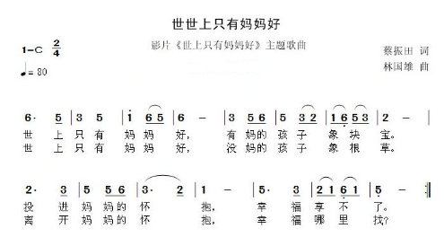

注意：上面的ABCD..是钢琴上的对应的音，不是键盘上的键位
对应键盘键位描述
白色键依次是：A、S、D、F、G、H、J、K、L
黑色键依次是：W、R、T、U、I、O
当然如果只需要1(duo) 2(ruai) 3(mi) 4(fa) 5(sou) 6(la) 7(xi)，按对应数字键即可。
实例1：两只老虎
调子比较简单，按字母或数字都可以演奏，键盘键位如下：
D F G D, D F G D --- 1 2 3 1, 1 2 3 1 //两只老虎，两只老虎
G H J, G H J --- 3 4 5，3 4 5 //跑得快，跑得快
JK, JH, GD --- 56，54，31 //一只没有耳朵
JK, JH, GD --- 56，54，31 //一只没有尾巴
G J D, G J D --- 3 5 1,3 5 1 //真奇怪，真奇怪（有的谱子是2 5 1）
实例2：世上只有妈妈好
⌒代表连奏，速度自己把握，i表示duo的高音，其他的我也不太懂
